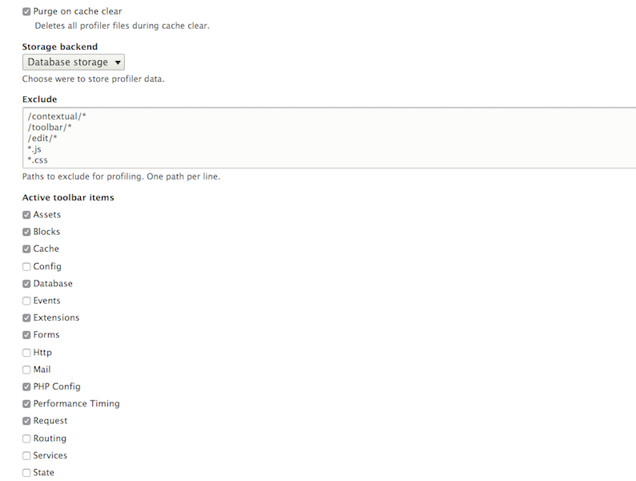

Debugging Drupal 8
with Drupal Console
About me


I work for FFW
(and you should too)
Download Drupal Console
# Run this in your terminal to get the latest project version:
curl https://drupalconsole.com/installer -L -o drupal.phar
# Accessing from anywhere on your system:
mv drupal.phar /usr/local/bin/drupal
# Apply executable permissions on the downloaded file:
chmod +x /usr/local/bin/drupal
# Copy configuration files to user home directory:
drupal init --override
# Check and validate system requirements
drupal check
Install peco
Simplistic interactive filtering tool
brew install peco
Debugging system
Copy configuration files
drupal init

drupal check
drupal check (boot)
drupal check (boot and fix)
~/.console/phpcheck.yml
requirements:
php:
required: 5.5.9
configurations:
required:
- date.timezone: 'America/Tijuana'
- memory_limit: '1024M'
recomended:
extensions:
required:
- date
- dom
- filter
- gd
- hash
- json
- pcre
...
recommended:
- mysql
- sqlite3
Debugging site
Validate composer.json file
# Execute this
composer validate
# This should be the result
./composer.json is valid
composer show --installed
composer show doctrine/annotations
drupal site:status [1/2]
drupal site:status [2/2]
drupal database:connect | database:client
drupal database:table:debug
drupal database:table:debug
drupal database:table:debug node_field_data
drupal config:debug
drupal config:debug system.site
drupal config:settings:debug
sites/default/settings.php
$settings['twitter_api_key'] = 'QNDM8YVcRd9LWm0HLUQLQKpdY';
drupal container:debug
drupal container:debug | peco
drupal rest:debug
drupal rest:debug entity:node
drupal router:debug
drupal router:debug | peco | awk '{print $1}' | xargs drupal router:debug
drupal router:debug user.login
drupal state:debug
drupal state:debug system.theme.files
drupal site:mode dev [1/2]
Performance
/admin/config/development/performance
Views settings
/admin/structure/views/view/content
Logging and errors
/admin/config/development/logging
drupal database:log:debug --reverse
--limit=20
drupal database:log:debug 828
drupal site:mode dev [2/2]
Twig debug
kint
# Download devel, parent module.
drupal module:download devel --latest
# Install kint
drupal module:install kint
{{ kint() }}
core/themes/bartik/templates/page.html.twig
Debug commands not mentioned
- cron:debug
- migrate:debug
- module:debug
- multisite:debug
- theme:debug
- update:debug
- user:debug
- views:debug
drupal site:statistics
drupal create:nodes
drupal create:nodes --no-interaction
drupal chain
drupal chain --file=~/.console/chain/create-data.yml
commands:
# Create dummy data
- command: create:users
options:
limit: 5
- command: create:vocabularies
options:
limit: 5
name-words: 5
learning: true
- command: create:terms
- command: create:nodes
options:
limit: 50
webprofiler
# Download devel parent module.
drupal module:download devel --latest
# Install webprofiler.
drupal module:install webprofiler
Webprofiler settings
/admin/config/development/devel/webprofiler

drupal webprofiler:list --limit=20
drupal webprofiler:benchmark
drupal webprofiler:benchmark http://drupal8.dev --runs=50
site:maintenance
config
config
config:debug
config:edit
config:export
config:export:content:type
config:export:single
config:export:view
config:import
config:import:single
config:override
user
user
user:login:clear:attempts
user:login:url
user:password:hash
user:password:reset